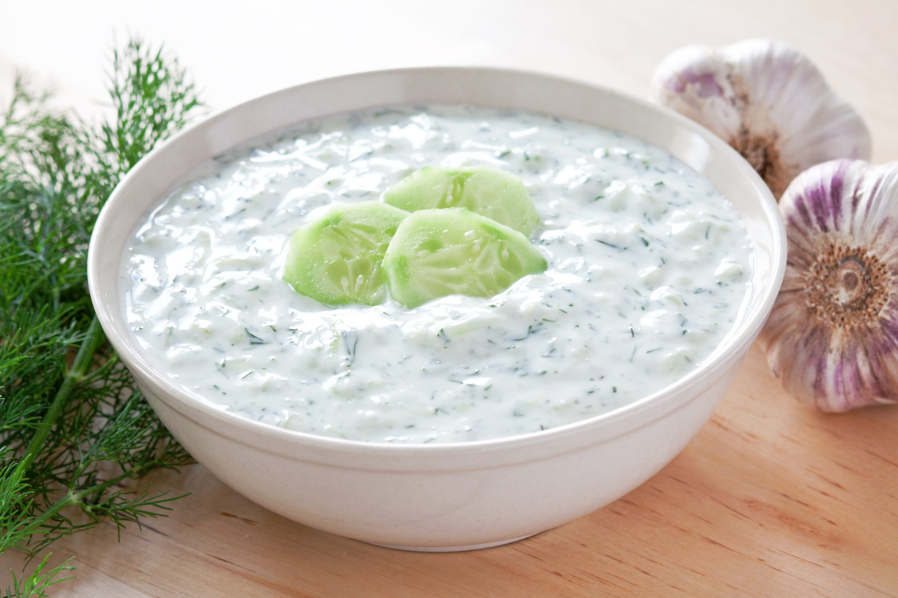

Tzatziki recipe

Description
Tzatziki is made simply with yogurt, drained cucumber, olive oil, fresh herbs (usually mint or dill), garlic, lemon juice and salt. It's a refreshing chilled sauce, dip or spread.
I traveled to Greece last fall and ordered tzatziki at every restaurant. I'm serious. I enjoyed tzatziki with every single meal, even breakfast. This recipe tastes just like authentic tzatziki.
Ingredients
- One cucumber
- Greek yoghurt
- Few table spoons of olive oil
- Garlic
- Lemon
- Vinegar
Steps
- Start by grating the cucumber. I use the largest holes on a box grater to give my final sauce texture and plenty of green flecks.
- Next, squeeze the water out of the grated cucumber. This step is essential for making a creamy tzatziki
- if you skip it, the water from the cucumber will cause your sauce to separate. Squeeze the cucumber directly over the sink, or press it lightly between kitchen or paper towels.
- Then, stir everything together! Mix the squeezed cucumber with the yogurt, lemon juice, garlic, olive oil, salt, and herbs, and chill until you're ready to use.